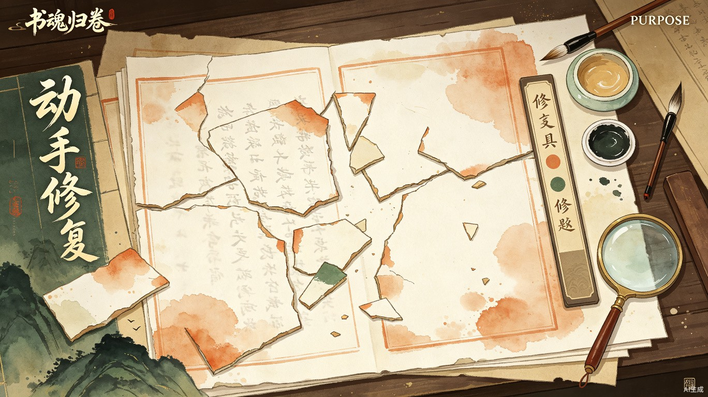

古籍修复解谜网页游戏 · 产品需求文档
《书魂归卷》——一款以古籍修复为核心机制的解谜叙事网页游戏。
绝大多数人对古籍修复这一国家级非遗技艺的认知停留在"概念层"，缺乏真实的情感卷入。现有古籍数字化项目以展示为主，普通大众只能"看"，无法"参与"，导致文化传承的感知距离始终无法缩短。
玩家扮演一名古籍修复师，通过修补残损页面、辨认模糊文字、还原散佚篇章来逐步揭开古籍背后的历史故事。产品以网页形态承载，无需下载、即开即玩，最大限度降低体验门槛。

国家级非遗技艺的数字化活化载体，契合"古籍活化利用"政策方向。
轻量级解谜叙事游戏，强调动手参与感与情感沉浸，而非竞技或养成。
主要面向18–35岁、对传统文化有好感但缺乏专业门槛的城市大众，尤其是有刷文化类内容（纪录片、短视频、小红书）习惯的人群。
| 用户维度 | 特征描述 |
|---|---|
| 年龄层 | 18–35岁，以大学生和年轻职场人为主 |
| 文化偏好 | 关注国风、非遗、博物馆内容，但缺乏深度接触渠道 |
| 游戏习惯 | 偏好轻量级休闲游戏，愿意为优质内容付费或分享 |
| 使用场景 | 地铁通勤、午休、睡前等碎片时间；也适合文化博主嵌入推荐 |
地铁、午休、睡前等场景下，以链接形式即开即玩，单局时长5–15分钟。
文化类博主/账号将游戏链接作为内容推荐，玩家自发分享通关截图或解谜进度。
古籍修复是国家级非物质文化遗产，但公众认知度极低。《书魂归卷》用零门槛的网页游戏形式，将修复师的核心动作——拼合、辨识、还原——转化为可感知的互动体验。
产品让非遗技艺从"被保护的文物"变成"被大众参与的活态文化"，直接契合国家"古籍活化利用"政策方向，具备显著的社会效益与传播价值。
| 维度 | 价值主张 | 实现路径 |
|---|---|---|
| 文化 | 非遗技艺活态传承 | 将修复动作转化为游戏机制 |
| 教育 | 零门槛文化科普 | 叙事化嵌入历史知识 |
| 娱乐 | 沉浸式解谜体验 | 碎片拼合 + 文字辨识 + 章节解锁 |
| 社交 | 可传播的文化内容 | 分享截图、排行榜、成就系统 |
游戏以"修复一本古籍"为主线，每一章节对应古籍中的一个篇章。玩家需要完成三类核心动作，逐步推进叙事：
将残损页面上的碎片拖拽至正确位置，还原页面结构。难度随章节递增，碎片形状从规则到不规则。
使用放大镜工具辨认模糊或残缺的文字，从候选字库中选择正确字符填入空缺处。
根据上下文逻辑和线索，将散落的段落按正确顺序排列，还原完整篇章。
合理使用毛笔、浆糊、宣纸等修复工具，不同工具对应不同修复动作，增加操作真实感。
flowchart TD
A[选择古籍] --> B[章节解锁]
B --> C[碎片拼合关卡]
C --> D[文字辨识关卡]
D --> E[篇章还原关卡]
E --> F{章节完成?}
F -->|是| G[解锁叙事片段]
G --> H[解锁下一章节]
H --> B
F -->|否| C
G --> I[分享成就/截图]
每一本待修复的古籍背后都隐藏着一段历史故事。玩家在修复过程中，通过解锁叙事片段逐步了解古籍的成书背景、流转经历和人物命运。
| 章节 | 修复对象 | 历史背景 | 情感主题 |
|---|---|---|---|
| 第一章 | 明代医书残页 | 瘟疫时期的民间医者 | 仁心济世 |
| 第二章 | 宋代诗集散卷 | 贬谪文人的边疆生涯 | 家国情怀 |
| 第三章 | 清代家书册页 | 商贾家族的聚散离合 | 亲情守望 |
| 第四章 | 民国华侨家书 | 下南洋华工的思乡与奋斗 | 故土眷恋 |
| 第五章 | 宋代食谱手抄本 | 宫廷御厨的传承与流亡 | 烟火人间 |
| 第六章 | 明代民俗话本 | 市井说书人的江湖传奇 | 市井百态 |
| 层级 | 技术方案 | 选型理由 |
|---|---|---|
| 前端框架 | Vue 3 + TypeScript | 组件化开发、响应式数据、良好的TS支持 |
| 游戏渲染 | HTML5 Canvas 2D / PixiJS | 碎片拖拽、文字渲染、动画效果 |
| 状态管理 | Pinia | 轻量、类型友好、适合中小规模状态 |
| 数据存储 | LocalStorage + 服务端存档 | 支持离线游玩与跨设备同步 |
| 部署 | 静态托管（Vercel / 阿里云OSS） | 低成本、高并发、全球CDN |
flowchart LR
subgraph 前端层
A[游戏主界面] --> B[碎片拼合引擎]
A --> C[文字辨识模块]
A --> D[叙事播放器]
A --> E[成就系统]
end
subgraph 数据层
F[关卡配置JSON]
G[用户进度存档]
H[叙事内容资源]
end
B --> F
C --> F
D --> H
E --> G
前2章完全免费，降低体验门槛，最大化用户触达。
后续章节以单本古籍为单位付费解锁，或提供"全本通"订阅。
flowchart LR
A[产品上线] --> B[文化KOL推广]
B --> C[用户自发传播]
C --> D[博物馆/图书馆合作]
D --> E[高校课程嵌入]
E --> F[政府文化项目申报]
F --> G[IP衍生与联名]
| 阶段 | 时间 | 目标 | 交付物 |
|---|---|---|---|
| MVP验证 | 第1–2月 | 验证核心玩法吸引力 | 1本古籍（2章）可玩Demo |
| 内容扩展 | 第3–4月 | 丰富叙事与关卡 | 3本古籍完整内容上线 |
| 社交功能 | 第5–6月 | 提升用户留存与传播 | 排行榜、分享、成就系统 |
| 生态合作 | 第7–12月 | 建立B端合作网络 | 3+博物馆/高校合作落地 |
《书魂归卷》不仅是一款游戏，更是一座连接大众与古籍修复技艺的桥梁。通过将"修复"这一核心动作转化为可感知的互动体验，我们让非遗技艺从博物馆的玻璃展柜中走出来，进入每个人的手机屏幕。
在碎片时间里修复一页古籍，在解谜过程中读懂一段历史——这正是"让文化活起来"的最佳诠释。